Every lecture slide, shown in full — then explained the way a tutor would: the one biochemical pathway that ties the whole lecture together, why each drug has the side effects it does, and the clinical trade-offs that decide which you'd actually prescribe. The slide states the fact; the note tells you what it means.
Covers 28 slides · 9 partsFigures the lecture's own slidesSelf-tests interactive recall
How to use this guide
Each slide is shown in full (click to enlarge). The text underneath is not a re-caption — it adds the mechanism, the reasoning and the clinical angle the slide leaves unsaid, and links each idea to the next. One pathway (arachidonic acid → COX / lipoxygenase) runs through the whole lecture; keep it in view. The coloured notes flag the asides:
Why / mechanism The pharmacology the slide assumes — where in the pathway the drug acts and why that matters.
Exam hook The discriminating fact or framework that earns the mark.
Clinical Adverse effects, interactions and prescribing decisions on a real patient.
§0Scope of the lecture
Learning objectives
Two drug classes, one pathway, and the reasons they're hard to use well.
The lecture asks you to do four things: explain how NSAIDs and corticosteroids work, differentiate COX-1 from COX-2, and discuss their adverse effects and contraindications. Every one of those is easier if you anchor it to the arachidonic-acid pathway in §1.
SLIDE 2Learning objectives
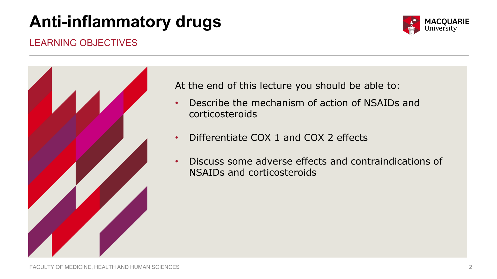
Orientation
Notice the pairing throughout: NSAIDs and corticosteroids are taught side by side because they hit the same inflammatory pathway at different points — that contrast is the spine of the exam questions.
§1Inflammation & the targets
Inflammation & the drug landscape
What we're suppressing, the mediators that carry it, and the five ways to block it.
Before the drugs, the target. Inflammation is a protective response that becomes a problem when it's excessive or chronic — and it's carried largely by lipid mediators made on demand from the cell membrane.
SLIDE 4Inflammation — history & definition
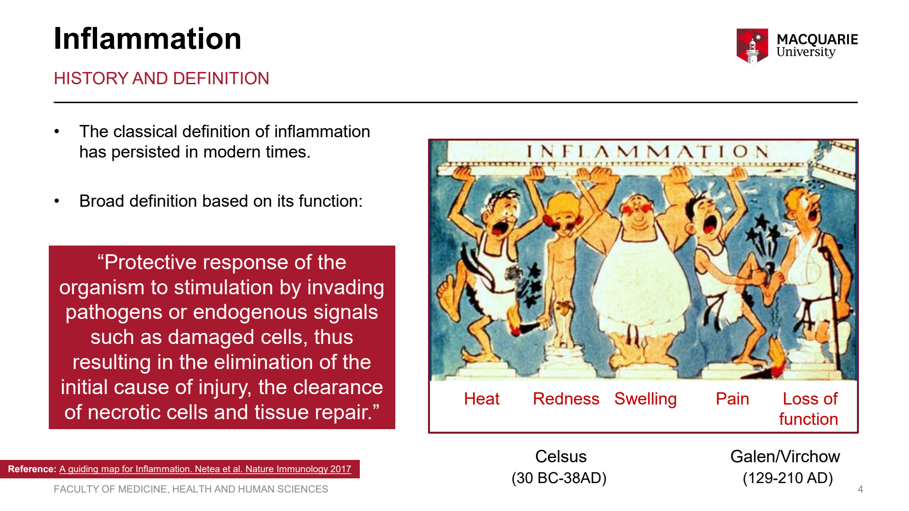
Exam hook · the five cardinal signs
The classical signs the definition points to are worth having ready: rubor (redness), calor (heat), tumor (swelling), dolor (pain) and functio laesa (loss of function) — all driven by vasodilation, increased permeability and sensitised nerve endings, which is exactly what the prostaglandins on the next slide produce.
SLIDE 5Prostaglandins & leukotrienes — the key mediators
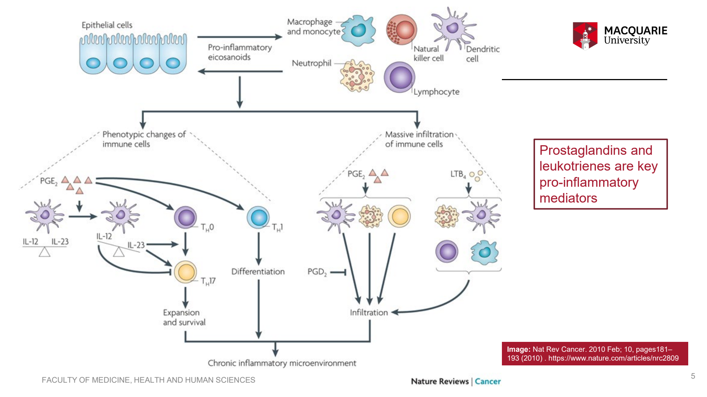
Why · learn one pathway and the whole lecture follows
Everything downstream hangs on one cascade: membrane phospholipid →(phospholipase A2)→ arachidonic acid → then two ways — COX makes prostaglandins & thromboxane, and 5-lipoxygenase makes leukotrienes. Fix this and you can place every drug: NSAIDs block COX (so PGs fall but leukotrienes are spared — even shunted up, which is why NSAIDs can trigger asthma); steroids block the cascade at phospholipase A2 (so both arms fall).
SLIDE 6Five major groups of anti-inflammatory drugs
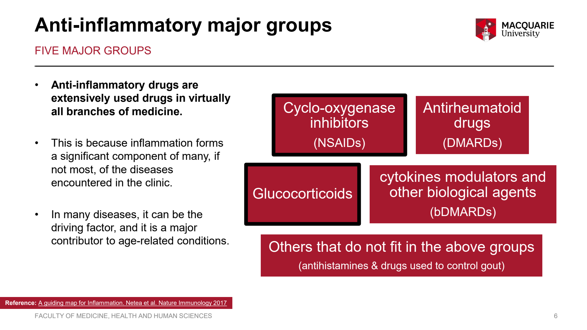
This lecture takes two of the five: COX inhibitors (NSAIDs) and glucocorticoids. The others are worth placing — DMARDs (e.g. methotrexate) and biologics/bDMARDs (e.g. anti-TNF antibodies) target the chronic immune machinery of rheumatoid disease rather than the acute eicosanoid pathway, and the "others" bucket holds antihistamines and gout drugs.
§2COX inhibitors
NSAIDs — mechanism & COX selectivity
Block the enzyme, lose the prostaglandins — with one famous exception.
NSAIDs are a chemically diverse group with one shared action: they inhibit cyclo-oxygenase. How tightly they bind, and which COX they prefer, explains both their benefits and their harms.
SLIDE 7NSAIDs — the class
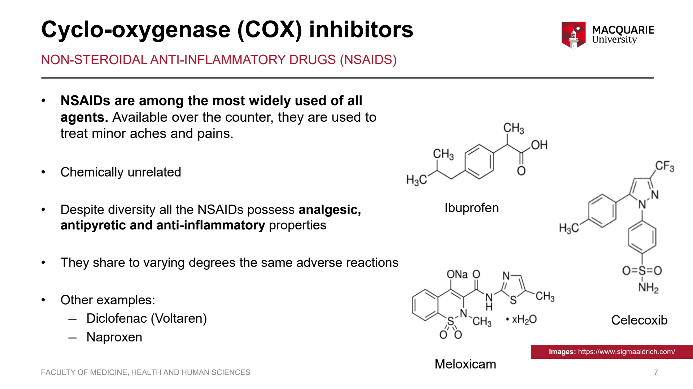
The take-home from the "chemically unrelated but same action" point: NSAIDs are defined by what they do (inhibit COX), not by structure. That shared mechanism means they also share a shared toxicity profile — so switching between NSAIDs rarely escapes the class side effects.
SLIDE 8Irreversible inhibition — aspirin
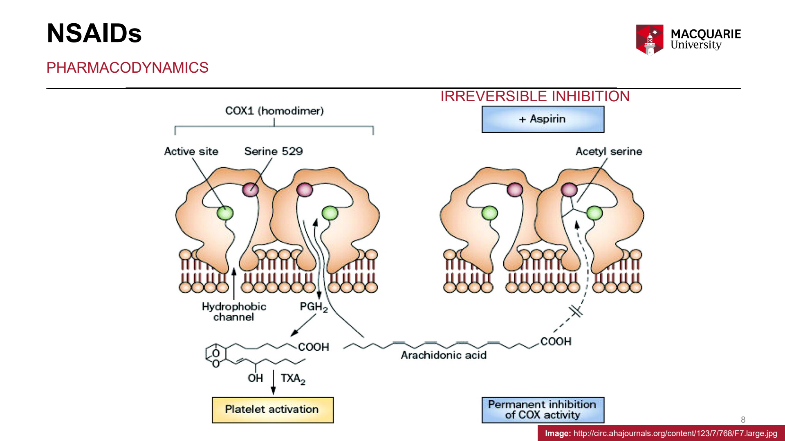
Clinical · why aspirin is different
Most NSAIDs inhibit COX reversibly/competitively — stop the drug and the enzyme recovers. Aspirin is unique: it acetylates a serine (Ser529/530) in the active site, blocking arachidonic acid access permanently. In a platelet — which has no nucleus and can't make new COX — one dose knocks out thromboxane for the cell's whole ~7–10 day life. That's precisely why low-dose aspirin is a once-daily antithrombotic, and why you stop it ~a week before surgery.
SLIDE 9COX-1 vs COX-2 — the structural basis of selectivity
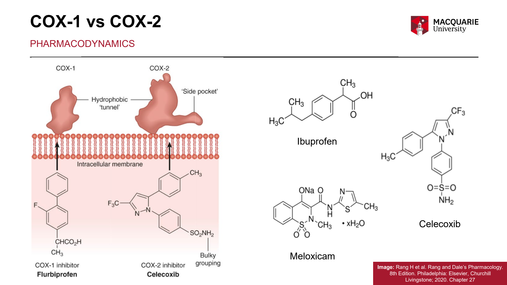
Why · a bigger pocket makes a selective drug
COX-1 and COX-2 do the same chemistry but have differently shaped channels: COX-2 has a larger "side pocket". Drugs with a bulky side group (the -coxibs, e.g. celecoxib) fit COX-2 but are too big for COX-1's narrow tunnel — so they inhibit COX-2 while largely sparing COX-1. Non-selective NSAIDs (ibuprofen, naproxen, flurbiprofen) fit both. The whole GI-sparing rationale for coxibs starts here.
Note the two-step logic: NSAIDs don't block prostaglandin receptors — they block the enzyme that makes the prostaglandins. Once made, prostaglandins act on a family of GPCRs (EP, IP, TP…), which is why their effects are so tissue-specific: the same mediator contracts one vessel and dilates another depending on which receptor the tissue expresses.
SLIDE 12What NSAIDs do — the three effects
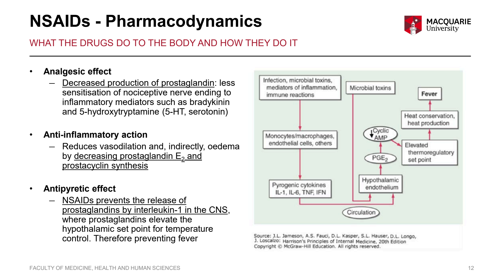
Why · three benefits, one cause
All three therapeutic effects are just "less prostaglandin" in three places. Analgesic: less PG means nociceptive endings are less sensitised to bradykinin and 5-HT (NSAIDs raise the pain threshold rather than numbing). Anti-inflammatory: less PG-driven vasodilation and oedema. Antipyretic: less PGE2 in the hypothalamus, so the fever set-point drops — which is also why NSAIDs don't lower a normal temperature.
§3COX-1 vs COX-2 effects
COX-1 vs COX-2 effects & the CV trade-off
Why the "cleaner" drug turned out to carry its own danger.
The split between the two enzymes is the whole story of NSAID side effects — and of why COX-2-selective drugs were both a breakthrough and a problem.
SLIDE 13Effects split by enzyme
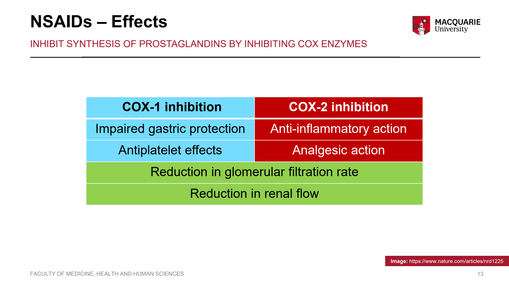
Why · constitutive vs inducible
Read the table through the biology: COX-1 is constitutive "housekeeping" — it makes the PGE2 that protects the stomach, the TXA2 that lets platelets aggregate, and PGs that maintain renal perfusion. COX-2 is induced at sites of inflammation (making the pain-and-swelling prostaglandins) but is also constitutive in kidney and endothelium. So blocking COX-1 explains the harms (ulcer, bleeding) and blocking COX-2 gives the benefit — and both reduce GFR by removing the prostaglandins that dilate the renal afferent arteriole.
Clinical · the renal "triple whammy"
Because NSAIDs blunt the prostaglandins that keep the afferent arteriole open, they're dangerous whenever the kidney is relying on that dilation — dehydration, heart failure, CKD. Combine an NSAID + ACE inhibitor/ARB + diuretic and you get the classic "triple whammy" acute kidney injury.
Coxibs were designed to spare the stomach (leave protective COX-1 PGE2 alone) — and they do. But endothelium uses COX-2 to make prostacyclin (PGI2), which is anti-thrombotic (vasodilator, anti-platelet). Inhibit that while leaving platelet COX-1/TXA2 (pro-thrombotic) untouched, and you tip the balance toward clotting → more MI and stroke. This is why rofecoxib (Vioxx) was withdrawn in 2004, and why coxibs are contraindicated in cardiovascular disease. The lesson: you can't block one half of a balanced system for free.
§4Pharmacokinetics
NSAID pharmacokinetics
How they move through the body — and where that bites.
Two PK facts carry most of the clinical consequences: NSAIDs are weak acids that are highly protein-bound, and their half-lives vary enormously.
SLIDE 15Pharmacokinetics
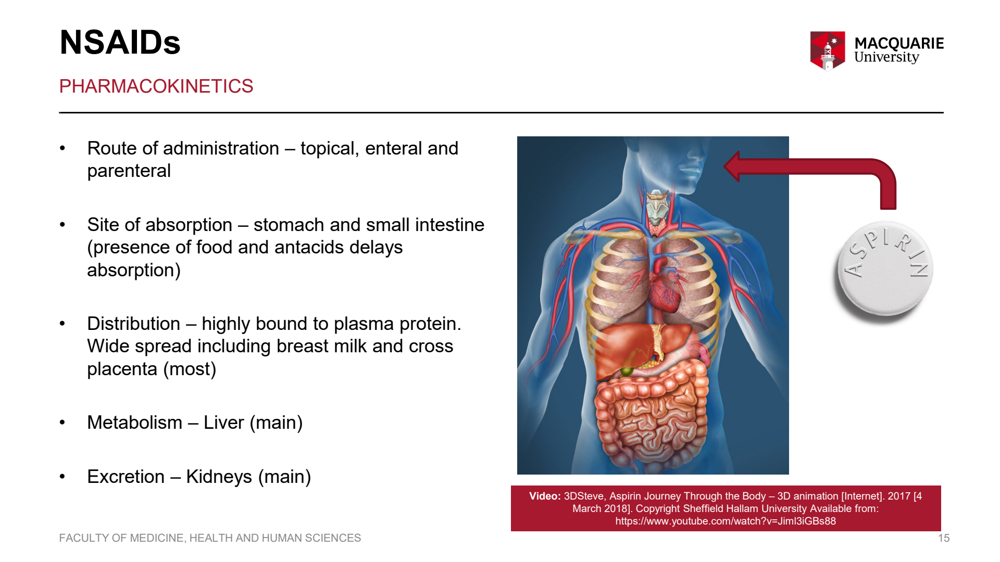
Clinical · protein binding = interactions
Being highly plasma-protein bound, an NSAID can displace other bound drugs — classically warfarin (↑free warfarin + the NSAID's own antiplatelet and gastric effects = serious bleeding risk) and sulfonylureas. As weak acids they also concentrate in acidic environments (inflamed tissue — useful; gastric mucosa — part of why they ulcerate).
SLIDE 16Half-lives & dosing
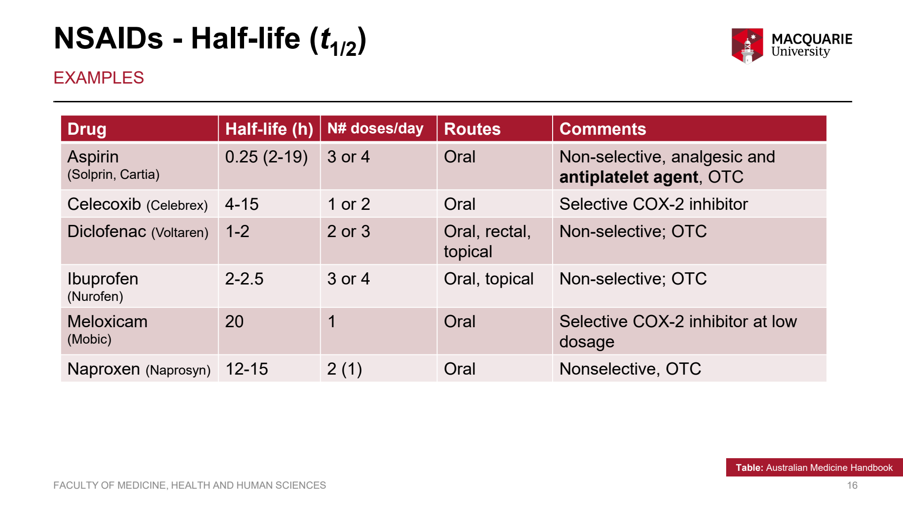
Exam hook · reading the table
The spread of half-lives sets dosing: short (ibuprofen ~2 h) → 3–4 times daily; long (meloxicam ~20 h) → once daily. Aspirin is the trick entry — its plasma half-life is only ~15 min, yet it's dosed once daily as an antiplatelet, because (as in §2) its effect on the platelet outlives the drug. Meloxicam is flagged as "selective COX-2 at low dose" — selectivity that fades as the dose rises.
§5The endogenous hormone
Corticosteroids — the hormone & HPA axis
To use the drug safely you have to respect the hormone it mimics.
Glucocorticoids are a natural hormone given in pharmacological doses — so their biggest dangers come from overriding the body's own tightly controlled system.
SLIDE 17Steroid hormones — two families
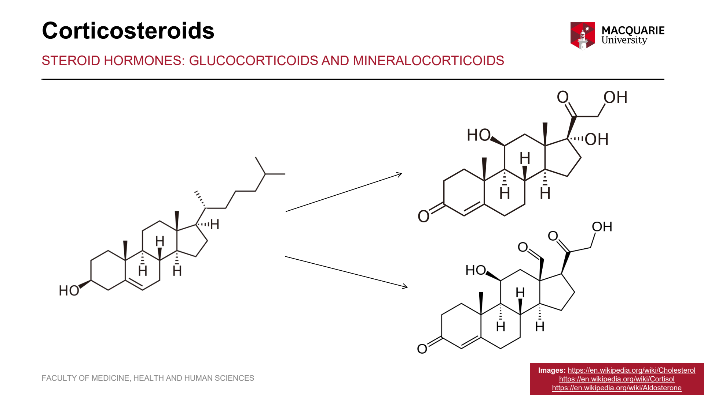
SLIDE 18Synthesis from cholesterol
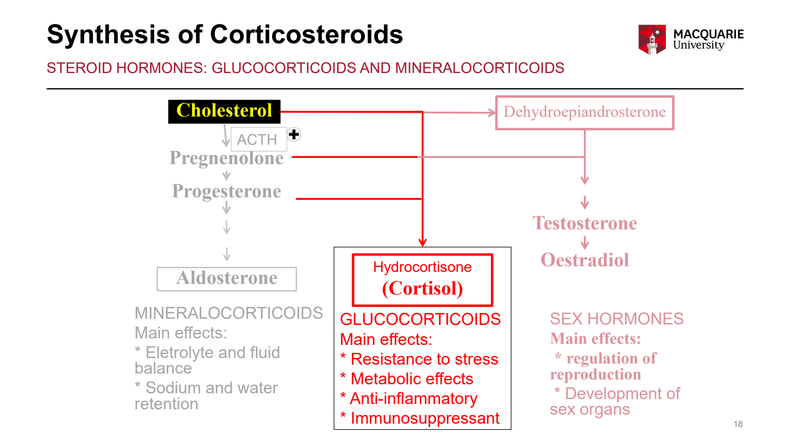
Two things matter from the synthesis pathway. First, all these hormones share a cholesterol backbone, so they're lipophilic — that's why they cross the cell membrane to an intracellular receptor (§6), unlike water-soluble hormones. Second, glucocorticoids (cortisol — metabolic + anti-inflammatory) and mineralocorticoids (aldosterone — salt/water) branch from the same tree, which is why many steroid drugs carry some unwanted mineralocorticoid (salt-retaining) activity.
SLIDE 19Adrenal anatomy
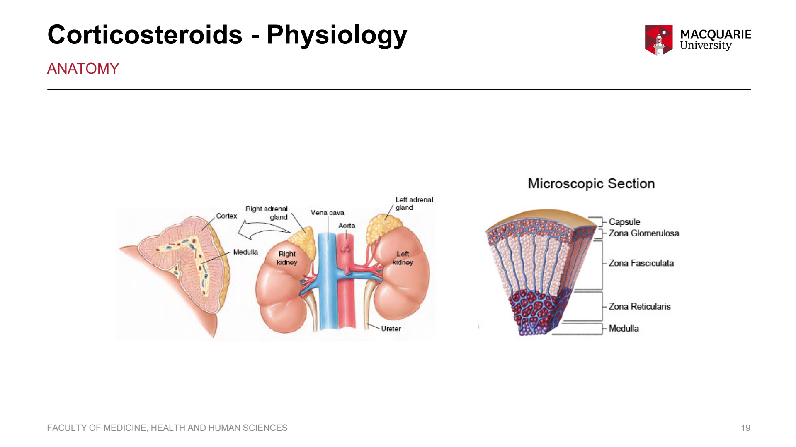
SLIDE 20HPA axis & rhythms
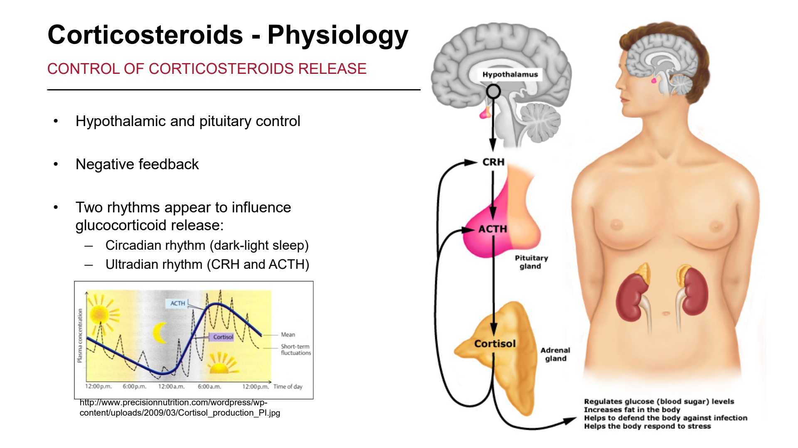
Clinical · never stop steroids suddenly
Cortisol release runs on the HPA axis (hypothalamic CRH → pituitary ACTH → adrenal cortisol) with negative feedback and a morning-peak circadian rhythm. Give exogenous steroid and that feedback switches the axis off — ACTH falls and the adrenal cortex atrophies. Two rules follow: dose in the morning to match the natural rhythm, and after more than ~2–3 weeks taper, never stop abruptly — a suppressed, atrophied adrenal can't mount cortisol for stress, and sudden withdrawal precipitates an adrenal (Addisonian) crisis.
§6As anti-inflammatory drugs
Corticosteroids — potency & mechanism
Why they're the most powerful anti-inflammatories — and the slowest.
Steroids act higher in the cascade than NSAIDs and by changing gene transcription — which makes them broader and stronger, but also slower and more toxic.
SLIDE 21Corticosteroids as anti-inflammatories
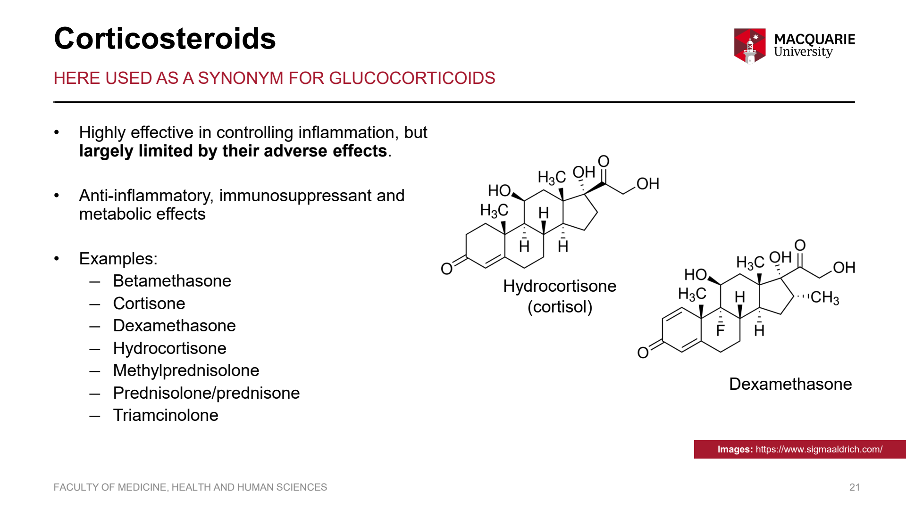
The slide's framing is the key caveat of the whole class: steroids are "highly effective… but largely limited by their adverse effects." Everything useful (anti-inflammatory, immunosuppressant) and everything harmful (the metabolic effects) comes from the same receptor — so you can't have one without the other, which is why dose and duration are everything.
SLIDE 22Potency comparison table
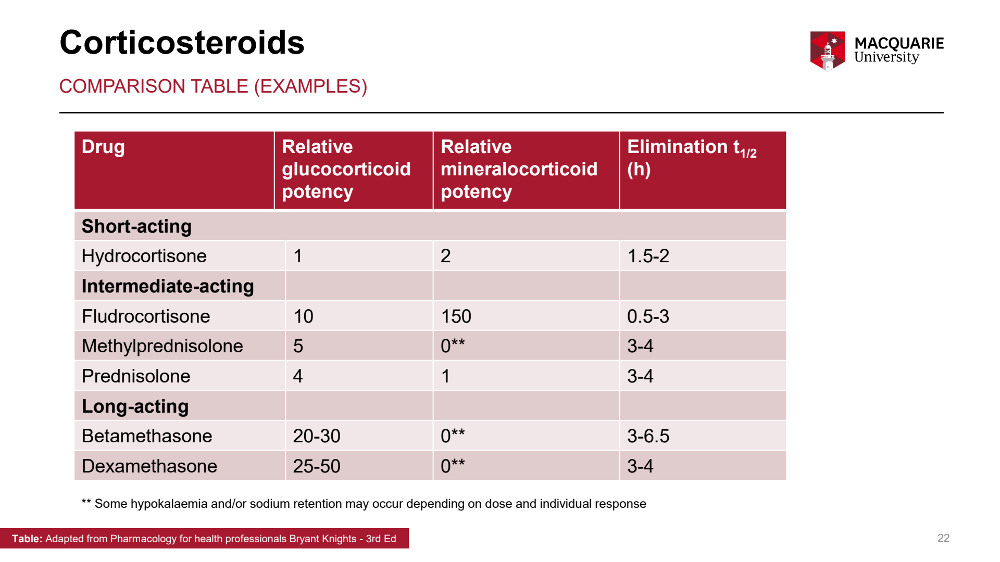
Exam hook · read the two potency columns
The table is really a prescribing guide. Hydrocortisone (=cortisol) is the reference (gluco 1, mineralo 2). Dexamethasone/betamethasone are hugely potent glucocorticoids with ~zero mineralocorticoid activity → pure anti-inflammatory with no salt/water retention (ideal for cerebral oedema, long-acting). Fludrocortisone is the opposite — huge mineralocorticoid potency → used to replace aldosterone (Addison's). Match the potency profile to the job.
Why · this one diagram contrasts both drug classes
Read it as the master map. Steroids induce annexin-1 (lipocortin-1), which inhibits phospholipase A2 — the enzyme at the very top that releases arachidonic acid. Block there and you lose both prostaglandins/thromboxane and leukotrienes. NSAIDs act one step down, at COX only, so leukotrienes survive. That single difference in level explains why steroids are the broader, more powerful anti-inflammatory.
SLIDE 24Transactivation
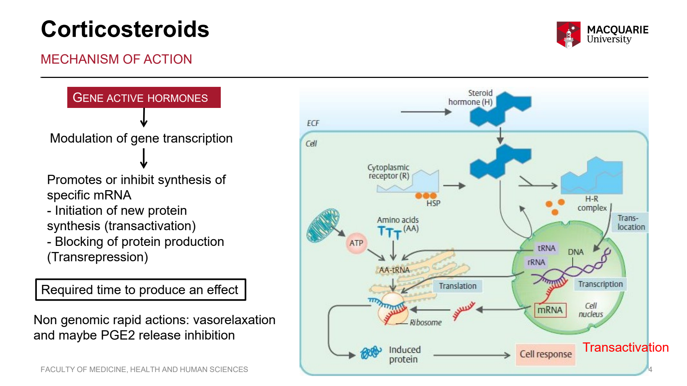
SLIDE 25Transrepression (↓COX-2)
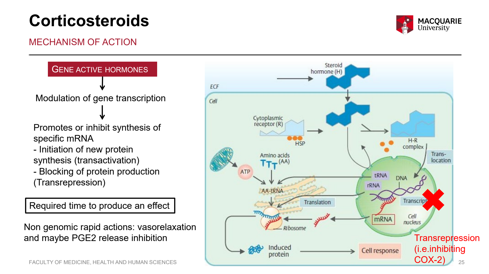
Why · gene-active, therefore slow
Steroids are lipophilic, so they slip through the membrane to a cytoplasmic receptor, then the complex enters the nucleus and reprograms transcription two ways: transactivation switches on anti-inflammatory genes (notably annexin-1), and transrepression switches off pro-inflammatory genes (NF-κB targets — COX-2, cytokines, iNOS). Because this works through making and unmaking proteins, it needs hours — "required time to produce an effect" — which is why steroids aren't instant and why a few rapid, non-genomic effects are noted separately.
Steroids block —both prostaglandins and leukotrienes; act by changing transcription (slow)
Dexamethasone — high glucocorticoid, near-zero mineralocorticoid potency
§7Harms & who to avoid them in
Adverse effects & contraindications
Every side effect is a predictable extension of the mechanism.
You don't memorise these lists — you derive them. NSAID harms are "too little prostaglandin"; steroid harms are "too much cortisol."
SLIDE 27Common adverse effects
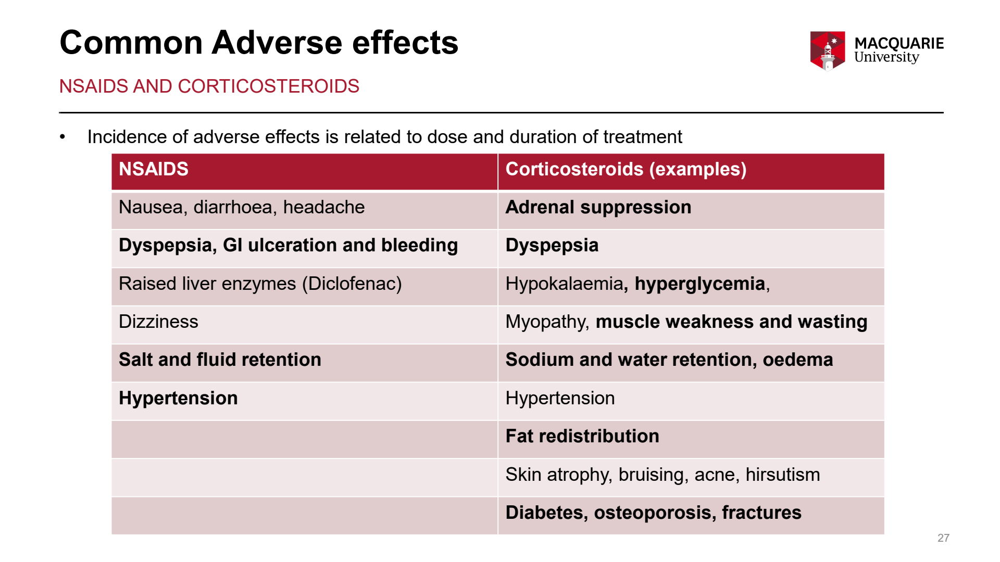
Why · derive, don't memorise
NSAIDs = lost prostaglandins: GI dyspepsia/ulcer/bleeding (no gastric PGE2), salt/fluid retention and hypertension and ↓renal function (lost renal PGs), bleeding (lost platelet TXA2). Steroids = Cushing's syndrome in a bottle: hyperglycaemia (gluconeogenesis), osteoporosis & fractures, proximal myopathy/muscle wasting, central fat redistribution (moon face, buffalo hump), skin atrophy/bruising, immunosuppression, adrenal suppression, and — from mineralocorticoid activity — Na⁺/water retention with hypokalaemia. All are dose- and duration-dependent.
SLIDE 28Gastric acid secretion
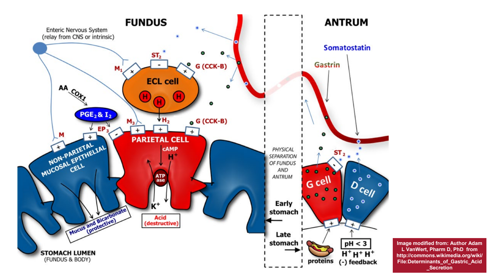
Clinical · why NSAIDs ulcerate, and how to prevent it
Gastric PGE2 normally does two protective jobs — reduces acid secretion and boosts mucus and bicarbonate. Remove it with an NSAID and the mucosa is exposed to acid → ulceration and bleeding. Prevention follows directly: co-prescribe a proton-pump inhibitor, use a PGE1 analogue (misoprostol) to replace the lost prostaglandin, or choose a COX-2-selective agent (if CV risk allows).
SLIDE 29Contraindications
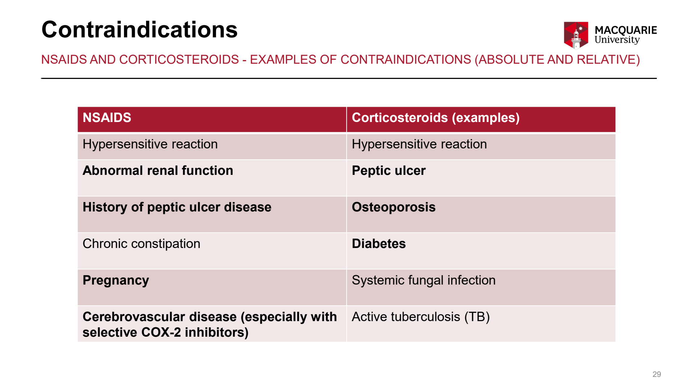
Exam hook · contraindications = the harms, pre-empted
Each contraindication is just "don't give the drug to someone already vulnerable to its main harm." NSAIDs: avoid in renal impairment, peptic ulcer disease, pregnancy (3rd trimester — PGE2 keeps the ductus arteriosus patent, so NSAIDs can close it prematurely), and CV/cerebrovascular disease (especially coxibs). Steroids: caution/avoid in peptic ulcer, osteoporosis, diabetes, and — because they immunosuppress — systemic fungal infection and active TB (risk of dissemination/reactivation).
§8The odd one out
Paracetamol
Looks like an NSAID, isn't one — and that's the point.
Paracetamol is grouped here for contrast: it shares two of the NSAID effects but not the one that defines the class.
SLIDE 30Where does it fit?
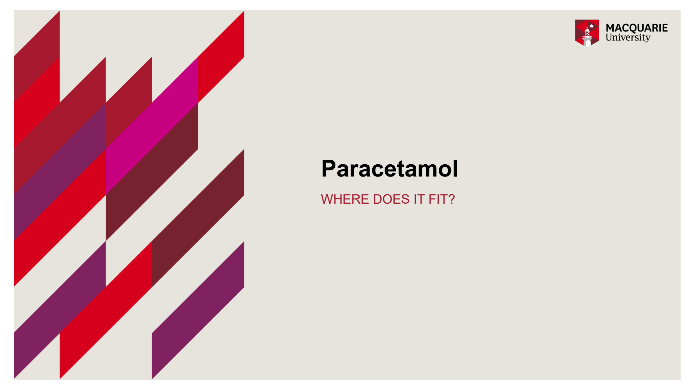
SLIDE 31Paracetamol — properties
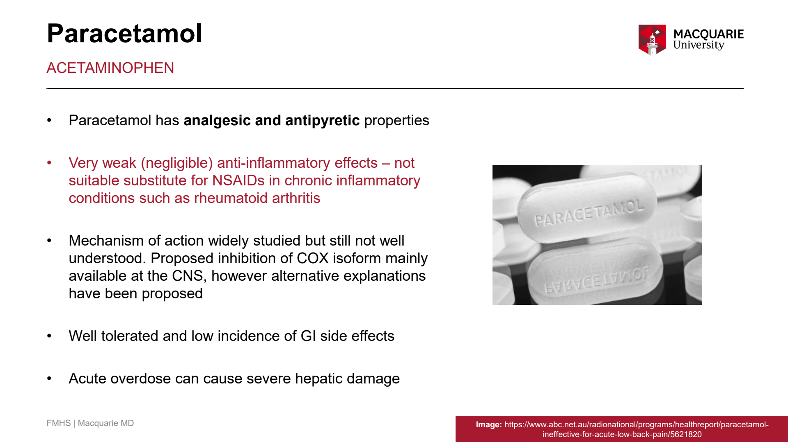
Clinical · the trade it makes
Paracetamol is analgesic and antipyretic but has negligible anti-inflammatory action — so it's not a substitute for an NSAID in rheumatoid arthritis. The likely reason it works centrally but not at inflamed tissue is that it's inactivated by the high peroxide levels at inflammatory sites. The pay-off: it spares the stomach, kidney, platelets and cardiovascular system — which is exactly why it's first-line for simple pain and fever. The catch is overdose: the toxic metabolite NAPQI depletes hepatic glutathione → liver failure (antidote: N-acetylcysteine).
R Recall — steroids, harms & paracetamol
HPA rule — long-course steroids must be tapered, dosed in the morning
NSAID harms —GI ulcer, ↓renal function, bleeding (all lost prostaglandins)
Built from: MEDI2004 Week 10 Lecture 18 — Commonly used anti-inflammatory drugs: NSAIDs and corticosteroids, Macquarie University. Personal study aid: the lecture's own slides, each explained in depth. Not for redistribution.
All 28 content slides covered, in order. Click any slide to enlarge; quote a code (e.g. §3) to go deeper, or hit Generate quiz (top) to spin one up from this guide.
scroll or +/− to zoom · drag to reposition · Esc to close